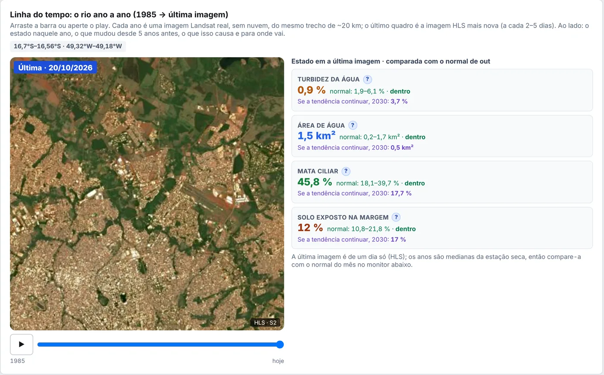
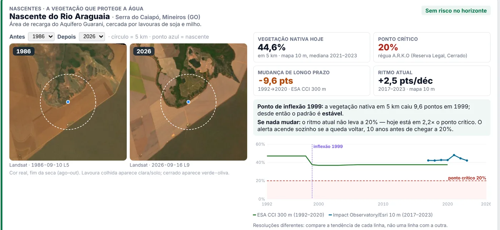
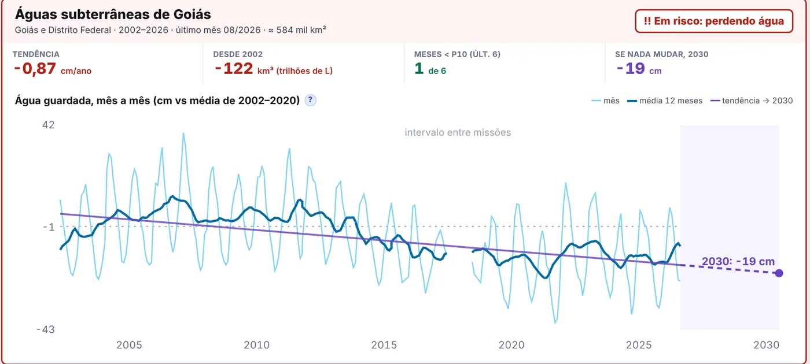
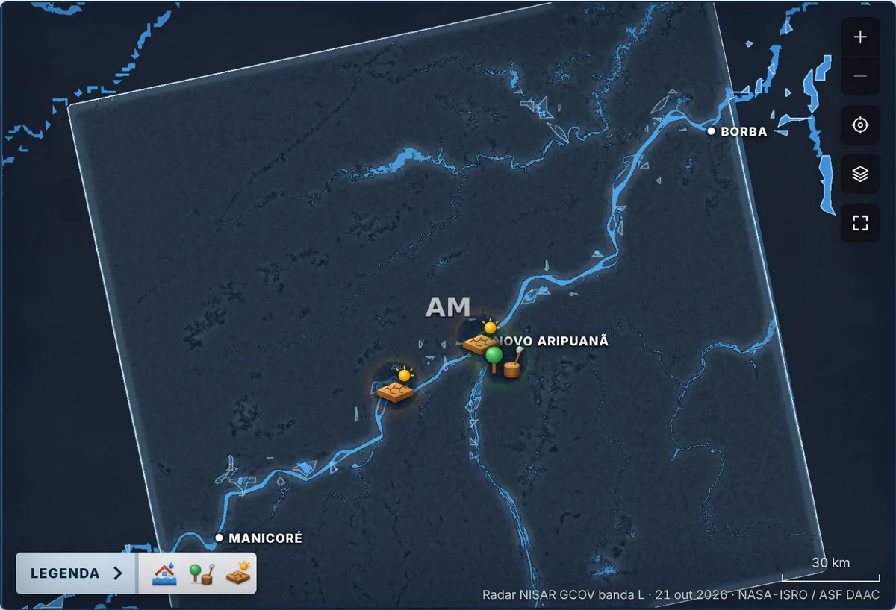
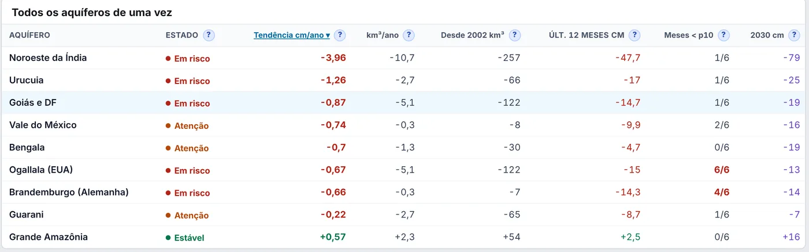
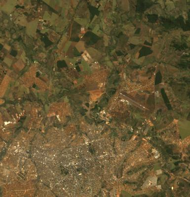
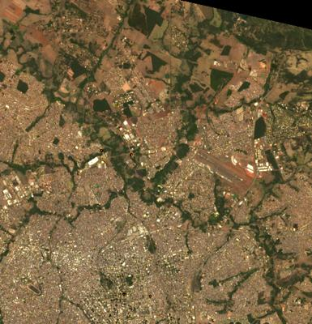
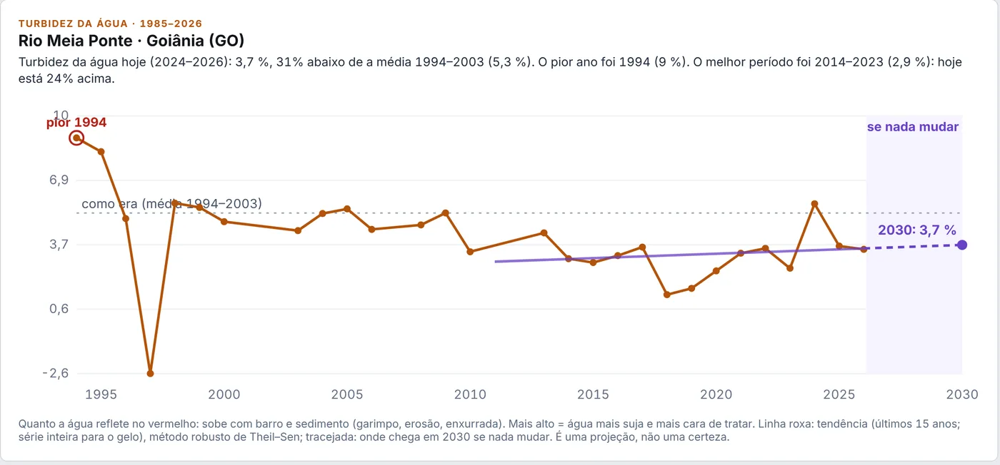
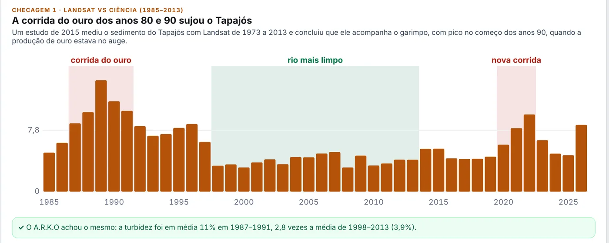

2026
A ONU declarou falência hídrica global
Em janeiro, a Universidade das Nações Unidas afirmou que o mundo entrou na era da falência hídrica: usamos mais água do que a natureza repõe.
Fonte: UNU-INWEH, 20/01/2026 ↗O A.R.K.O cruza 5 missões de satélite da NASA para mostrar onde rios, nascentes e aquíferos estão perdendo água, por que, e quanto tempo falta até o ponto crítico. Com coordenadas, para a equipe ir ao lugar certo.
Rios assoreiam, nascentes perdem a mata e aquíferos esvaziam um pouco a cada ano. Quem cuida da água mede em poucos pontos e só percebe quando a torneira seca.
Em janeiro, a Universidade das Nações Unidas afirmou que o mundo entrou na era da falência hídrica: usamos mais água do que a natureza repõe.
Fonte: UNU-INWEH, 20/01/2026 ↗A água guardada embaixo da terra, que abastece cidades e lavouras, vem diminuindo há décadas na maior parte do mundo.
Fonte: UNU-INWEH ↗Medido pelos satélites GRACE no A.R.K.O. É água que não aparece em nenhuma foto, mas faz falta em cada poço e nascente.
Ver no sistema ↗E se, em vez de descobrir a crise quando ela chega, a gente pudesse ver anos antes?
Um robô roda todo dia, baixa os dados abertos da NASA, calcula os indicadores com estatística robusta e publica tudo no sistema. Sem planilha, sem espera.
Cinco missões medem a superfície, a margem, a altura do rio e o peso da água no subsolo.
Cruzamos as fontes. Se o radar vê o chão afundando e o GRACE vê a água sumindo, o sinal é forte.
Cada lugar é medido contra o seu próprio passado. Mostramos o ano em que o padrão mudou e o prazo até o ponto crítico.
Focos priorizados, com ação sugerida, exportados em GeoJSON e CSV com coordenadas. A equipe vai direto ao lugar certo.
Enxerga através de nuvens e fumaça. Vê água, margem e mata mudando, e o chão afundando sobre aquíferos.
A memória de 40 anos: fotos reais, ano a ano, de cada trecho de rio.
Imagem nova a cada poucos dias desde 2017. É o monitor contínuo de turbidez e mata ciliar.
Mede a altura da água dos rios do espaço e mostra quando a vazante fica mais baixa que o normal.
Pesa a água guardada no subsolo. É assim que vemos um aquífero esvaziar.
Também usamos mapas de cobertura do solo da ESA (CCI) e da Impact Observatory para acompanhar a vegetação em volta das nascentes.
Escolha uma aba. Todas as telas abaixo são do sistema funcionando, com dados reais.
Turbidez, área de água, mata ciliar e solo exposto, comparados com o normal de cada mês. O sistema diz o que mudou, a causa provável e o que fazer agora.

Acompanhamos a vegetação nativa num raio de 5 km da nascente desde 1992 e mostramos quanto falta até o limite crítico de 20%.

Os satélites GRACE medem a massa de água no subsolo desde 2002. Mostramos a tendência, as secas de cada ano e para onde o aquífero vai se nada mudar.

O NISAR, novo satélite radar da NASA e da ISRO, vê a superfície mesmo com nuvem e fumaça. O A.R.K.O compara cada passagem e aponta onde a água, a margem e a mata mudaram.

Todos os lugares e indicadores num ranking de urgência, com o ano provável do ponto crítico e quando o alerta deve começar. É uma projeção de tendência, não uma certeza, e o sistema deixa isso claro.



19852026O mesmo trecho do Rio Meia Ponte, fonte de água da cidade, visto pelo Landsat em 1985 e hoje. A cidade avançou sobre as margens, e o sistema mede o que isso fez com o rio.
Um rio pode parecer normal numa imagem e estar piorando há uma década. Só o acompanhamento contínuo separa o ruído de um dia da tendência que leva à crise.

Comparamos o que o A.R.K.O mediu do espaço com estudos científicos e registros oficiais. E dizemos com clareza o que os dados não provam.
checagens independentes batem com o sistema
ano mais turvo do Tapajós, auge da corrida do ouro
rio mais baixo medido pelo SWOT, como registrou o Serviço Geológico do Brasil
reserva de Massingir encheu após a reforma, como dizem os engenheiros

O mesmo sistema responde a perguntas diferentes, conforme quem está olhando.
Dados de 40 anos para o plano de bacia, a alocação de água e as prioridades de investimento.
Onde fiscalizar primeiro: focos ordenados por prioridade, exportados com coordenadas.
A saúde do manancial e do aquífero que abastecem a cidade, com prazo até o ponto crítico.
Risco hídrico de cada fazenda, planta ou reservatório, antes que a outorga aperte.
Indicadores independentes, de satélite, para medir risco climático e provar impacto.
40 anos de imagens para estudar, ensinar e mostrar à comunidade o que mudou no seu rio.
O sistema já funciona e se atualiza sozinho. O próximo passo é validar em campo, com quem cuida da água de verdade. Procuramos parceiros para isso.
Criado no desafio “Dancing with the SARs”, dedicado ao satélite NISAR. Uma equipe que junta tecnologia, dados, design, comunicação e negócios.
Não, e preferimos ser precisos. É monitoramento contínuo: o sistema se atualiza sozinho todo dia, e o radar NISAR passa sobre cada área a cada cerca de 12 dias. Para água, que muda em semanas e anos, isso basta para agir antes.
De dados abertos de 5 missões de satélite: NISAR (NASA e ISRO), Landsat, HLS, SWOT e GRACE/GRACE-FO, além de mapas de cobertura do solo da ESA e da Impact Observatory. Cada número no sistema mostra a sua fonte.
Hoje cobrimos regiões de demonstração: quatro em Goiás, outras no Brasil e no mundo, e dez aquíferos. Como os dados de satélite são globais, incluir a sua bacia é o primeiro passo de um piloto.
Não. O A.R.K.O aponta onde a equipe deve ir conferir e exporta os focos com coordenadas em GeoJSON e CSV. Satélite e campo se complementam.
O sistema de demonstração é aberto e gratuito. Para organizações, oferecemos um piloto de 90 dias sem custo. Depois, o modelo é combinado conforme a área e as necessidades de cada parceiro.
É um hackathon internacional organizado pela NASA, em que equipes do mundo inteiro criam soluções com dados abertos da agência. O A.R.K.O nasceu na edição de 2026, em Goiânia.
Patrocínio, piloto, pesquisa ou imprensa: escolha o assunto, a mensagem sai pronta no WhatsApp.